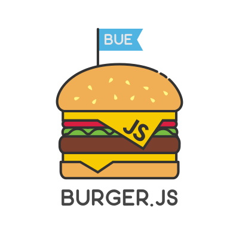
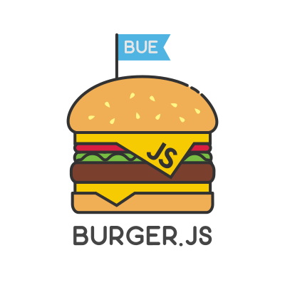

CSS razonable
 
Objetivos
- Cuestionar como trabajamos con CSS
- Ofrecer una alternativa simple, medible y completa
Panorama actual
- La manera de estilizar una interfaz requiere escribir más y más estilos
- CSS es finito
- ¿Cuántas veces repetimos las mismas declaraciones?
¿Cuántas veces repetimos las mismas declaraciones?
Lamentablemente, todo el tiempo
Project Wallace
Dribbble
npx wallace-cli https://dribbble.com/
Basecamp
npx wallace-cli https://basecamp.com/
Clases utilitarias
- Cumplen una función visual específica
- Inmutables y predecibles
- Fácil usar, agregar, eliminar y razonar
Atomic CSS
Tachyons
- Arquitectura no opinionada
- Filosofía declarativa (La responsabilidad ahora está en el template)
- Cada clase cumple una función visual específica
- Muy fácil de razonar, extender y personalizar
- Puede convivir con otra solución
Otros argumentos a favor
- La guía de estilos existe desde el día 1
- Nombrar por función visual es más conveniente que un concepto abstracto
- 15 kb
- No más cascada, especificidad de selectores y escribir demasiado CSS
- Hay problemas visuales que ahora pueden resolverse directamente en HTML
- Brilla cuando necesitás bajar el peso de tu CSS, refactorizar o hacer convivir 2 implementaciones al mismo tiempo
¿Desventajas?
- Los nombres parecen chino
- Llenás de clases el HTML
Comentarios finales
- Estaría buenísimo automatizar la creación de clases en base a los estilos aplicados para desligar la optimización del desarrollo
- Sienta un contrato muy fuerte entre diseño y frontend (Y eso es espectacular)
- Es muy fácil empezar a usarlo. Y también dejarlo
- Es importante ir revisando el CSS que generamos
- Apostá por un enfoque declarativo para tu interfaz